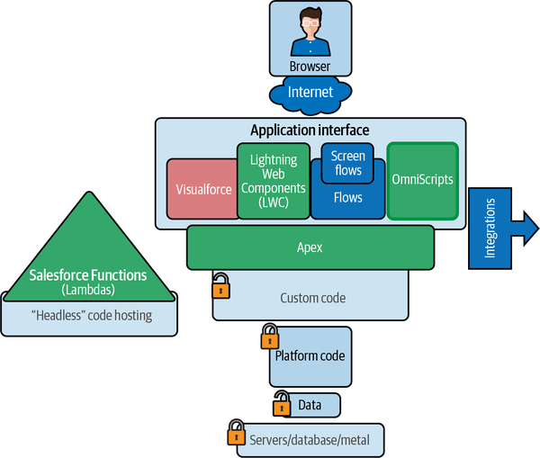
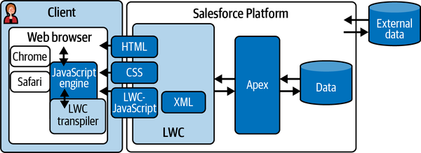
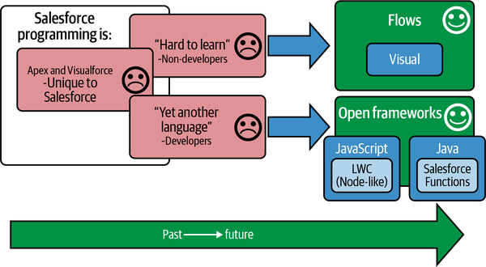

This chapter covers programming and customization of Salesforce. Many readers will be familiar with the concepts discussed here, because these tools are already present in their organization/operations. These readers may be seeking more knowledge about how they combine and how they are different.
It should not be assumed that you will have to use code to customize the platform. You might eventually, but in order to quickly take advantage of all the new features and feature upgrades, you should strive to use as many of them “out of the box” as possible. You shouldn’t start customizing unless you’re sure there isn’t an existing prebuilt feature that you can leverage (including newly released features). Your solution engineers should be able to meet the vast majority of your incoming needs without code. The flexible and modern programming features that have been added to the platform can be almost too enticing, but you’ll reap long-term benefits by reducing your customizations and leaning into the art of the possible within the existing platform functions, without extending into code.
The programming and customization landscape of Salesforce crystalizes around two primary concepts: multitenant and declarative versus custom strategies. The multitenant constraints color a lot of the customization technologies in an effort to protect the shared customer/user resources. In order to enable maximum functionality without risking performance, Salesforce surfaces “declarative” options for customization as much as possible. These declarative options are configurations from the web interface. Also known as “clicks not code,” the strategy of providing configuration and automation options without allowing code access has gained wide appeal. This has aligned with the global movement of “low-code” solution building. Expect to see more capability enablement from Salesforce as the company invests in more easy-to-use and easy-to-build tools.
Why is the programming landscape important to architects? There is no perfect platform that can do every task fast, cheaply, and at scale. Those aspects are always variable, even if you are using the native or core functions of a platform out of the box. For each advertised capability of a cloud platform that you are evaluating, you need to understand what limits are placed on it. This is especially important if you are moving from on-premises capabilities or if you are looking to migrate to a platform from any other. Assuming that an advertised feature is unlimited or has perfect parity with any other platform can lead to problems. Any platform that allowed users to do “infinite” anything would get abused and overloaded.
As we try to determine the fit and capabilities of a new platform, we use a lot of extreme terms to find out where the boundaries are. If possible, we record the sessions to reference later. Sometimes salespeople can overdescribe functionality. Figure 8-1 lists some terms that you should use and watch for when trying to understand a capability.
Learn to see the balancing act between capability and capacity. Ask questions to find out the extent of the capability and possible implications of easy-to-overlook limitations:
Is X unlimited?
Is X never down?
Is X free?
Is X guaranteed?
Is X instant?
Is X throttled?
Are there any extra licenses required?
What does this let me replace?
These questions will help you figure out which functionality is specific to your purpose and which can be leveraged across an enterprise. When you look at customization options and you have a budget to manage, you examine whether you already have something that does X (or if you can replace X with Y). While you learn about the capabilities discussed in this section, like customization, automation, batch processing, data load, transactions, and web services, try to understand the ones that differentiate Salesforce from other platforms.
Figure 8-2 shows a layout of the main types of code used in the Salesforce platform. There are other varieties of programming and customization tools available that work in the other stacks, but we are focusing on core platform options here.
The first point to understand is that the programming that can be done on the Salesforce platform is in addition to the core stack program. You are able to add functionality, but you are not able to touch the existing platform code. You can alter some behavioral aspects of the system, where doing so has specifically been enabled. You can also modify the user experience to make it seem as though you have altered the way the platform works, even though this is not actually the case. From a computer science perspective, it’s also important to know that the various languages you can use are all interpreted languages and not compiled into executable bytecode.

There are several stages of bytecode that are maintained behind the scenes and refreshed when your scripts are updated or called by other backend processes. Administrators and developers do not have to deal with compiled code like JARs or gzipped files. In sum, there’s a lot you can change in different places, but you can’t change everything. This makes code promotion feel a bit like changing the tires on a moving car (when that car is a rental). That analogy should help you understand why so much time is spent on code management tools and not snapshots, backups, and recovery. Keep that in mind as we go over the various major toolsets in the customization space.
Limits are another factor that should always be kept in mind when it comes to customization in Salesforce. Every tool built on the Salesforce platform is subject to the I/O and CPU limits that keep the multitenant availability of the platform secure from slowdowns. Governor limits keep you from writing code that creates too much resource demand on the platform. How much is defined by many different qualifications. One limit is that you can only query the database so many times in a transaction, which in Salesforce is any chain of code functions started by a specific event. If an event calls code that calls other code that creates something that calls other code, that is all considered part of a single transaction. Transactions also have other limits, like memory size and execution time. Platform events and Salesforce functions are the first true exceptions to that rule; they run outside of the Salesforce transaction, effectively in a separate compute space. Salesforce Functions programming is still very new and not quite in vogue yet, but it should be very strongly considered for custom development in medium and large organizations.
Another limit to be aware of is the maximum number of lines of code. The limit is currently stated as 6 MB. Some types of code (e.g., comments) are excluded from this sum, but it is still important to be aware that this constraint exists. Hitting the maximum can require some tricky redesigns and cleanup activities.
Salesforce also sets a limit with regard to code coverage, which relates to writing unit test code to confirm that your Apex code functions as intended prior to promotion (we’ll discuss this further in “Apex”). Production instances require that 75% of all lines of Apex code must be covered by test code. Letting your instance’s code coverage hover near 75% can lead to chaotic attempts to improve your code coverage being blocked by code coverage errors. Staying comfortably above this threshold is a golden rule that can help you avoid disastrous consequences.
The rest of this chapter focuses on the different types of development platforms that exist inside the Salesforce platform. These code platforms are used for customization and automation.
Keep an eye on the following aspects when you are reviewing each of the platforms (I’ll provide summary scores for all of them, based largely on my own experiences working with them, for purposes of comparison):
DevOps maturity
Language genealogy and popularity
Usage applications
Ease of use and learning
DevOps maturity refers to the ability to manage code with common tools like Git, Jenkins, Jira, and PMD. This score is based on the enterprise software management tools that can be used with each option discussed here (for simplicity’s sake, from here on I’ll refer to them all as “languages”). Mature organizations have heavy requirements for managing code. Regulation and compliance requirements also factor into many organizations’ choices as table stakes, regardless of how new or shiny a technology is. More often than not, the rule is: “If it can’t be governed (with our existing governance controls), we can’t use it.”
Language genealogy and popularity is a factor in how easy it is to find developers that are comfortable using a particular coding option. Apex, for example, is syntactically very similar to Java. Java developers will have a fairly low barrier of entry to learning Apex. Java is a very popular language, so this should provide a sense of security for those worried about stepping into a proprietary ecosystem.
Each of the languages described here has a specific set of capabilities that makes it better suited to some use cases than others. Knowing what each language is most often used for and comparing that to the type of development you are going to be doing will guide your level of investment in each. Some of these specific development focus areas might include pixel-perfect UI design, high-scale data synchronization, and citizen developer productivity.
In addition, some of the language types are based on commonly used formats or languages outside of Salesforce. Some of these languages have more unique components, which increases the learning curve required to achieve proficiency.
The final critical element to keep in mind is the difference between the language specification and the container that parses and executes the language. There are layers.
Apex is the foundational language of the core Salesforce platform. It’s not the original language of Salesforce customization, but it is currently at the heart of all of the other languages in play within Salesforce. From a structure and syntax perspective, it is very similar to Enterprise JavaBeans and borrows heavily from the Java language specification. Classes are registered and called as needed, with varying states of compilation and bytecode. Apex is interpreted by a custom interpreter, not with the classic Java compiler, but there are only a few idiosyncrasies that a Java developer would need to figure out to get productive in Apex. Apex is referred to as the foundation of Salesforce because of its ability to interact with the data layers. The other tools discussed here either have limited data layer interaction or require Apex code to do data manipulation.
Apex runs with memory, CPU time, and data retrieval limitations referred to as governor limits. These limits prevent code from taking more than a small portion of the shared resources. Writing code that efficiently works within the boundaries proposed by each of these limitations is a special art. There’s a lot of knowledge required to use the safe data retrieval functions that ensure that code isn’t stopped due to running afoul of one of them. These underlying limits are applicable across all of the interactions with the Salesforce programming layers. Even the no-code systems have to play within these limits.
While almost all data is exposed with out-of-the-box web services, you can also build custom web services with Apex. Apex is the data broker behind all of the frontend programming systems, as well as allowing custom inbound interactions with other systems.
Another topic somewhat unique to Apex development is unit testing with test classes. Test classes are special pieces of code that you create to pass arguments to your Apex code to simulate the code being run (see Example 8-1). If a test class encounters an unhandled error condition, infinite loop, governor limit, type mismatch, or other compilation/execution error, the test will fail. As mentioned previously, the platform’s test engine detects which lines of code are used (“covered”) by the unit test scenarios of your test classes and tracks the percentage of lines covered. If your code contains a logical fork (if/else), there must be test functions that cover both paths to get 100% coverage. Salesforce sets a minimum threshold of 75% code coverage in total for a production org’s codebase; if this threshold is not met, updates to your production code will not be allowed. These problems can be extremely difficult to resolve, so make sure any new developers are well trained in the best practices around test classes and not just basic Apex syntax.
CODE.cls
Public class MyClass{
void MySpecialFunction(int myvalue){
if(myvalue>1){
let x=y; //Only covered by testFunction2
let a=b; //Only covered by testFunction2
}else{
let x=b; //Only covered by testFunction1
let a=17; //Only covered by testFunction1
}
for(i=0;i<1000;i++){
if(myvalue==1){
a=9000 //Only covered by testFunction1
break; //Only covered by testFunction1
}else{
a=i; //Only covered by testFunction2
}
}
}
}
TEST.cls
Public class MyClass_TEST{
@isTest
void testFunction1(){
MyClass.MySpecialFunction(1); //passes a 1 to the Code
}
void testFunction2(){
MyClass.MySpecialFunction(2); //passes a 2 to the Code
}
}
Apex can be developed and edited in three primary integrated development environments (IDEs): Visual Studio Code (VS Code), Salesforce Code Builder, and the Salesforce Developer Console. VS Code, Microsoft’s language- and platform-agnostic development environment, has extensive plug-in support and a web-based repository integration. Code Builder is a fully featured web-based IDE, and the Developer Console is a more lightweight web-based editor.
Apex summary scores:
Visualforce (VF) is the Coldfusion or PHP of Salesforce. VF pages serve several functions within the platform. They’re created as empty HTML pages, into which you can drop any standard HTML, CSS, and JavaScript. VF pages are limited to the HTML4 doctype, so you’ll have to use Bootstrap to access any HTML5-specific features that you want to nest inside them. Fancy HTML and JavaScript isn’t the main point of VF, though. VF pages support a tag-based language that is custom to Salesforce. The tags are basically templates and slots for standard data access and form functions. You can do quite a bit with VF customization with Apex extensions to user-created custom tags as well as “code behind” pages.
Although Lightning Web Components, which we’ll look at shortly, is the recommended modern development toolset today for visual customization requirements, quick time to market and nimble functions like PDF rendering (one of my favorite uses for VF pages) have kept VF alive in the toolbelts of many Salesforce developers, and it remains a relevant tool today.
Visualforce summary scores:
DevOps maturity: 90%
Language genealogy and popularity—PHP (tag-based templates): 60%
Usage applications: 65%
Ease of use and learning: 55%
Aura was a huge step forward for Salesforce, embracing more of the capabilities of browser-based JavaScript over the server-side processing of VF. Aura could be written in the web-based Developer Console, but it required following certain patterns that were not aligned with the more open JavaScript patterns. This was one of the factors that led to slower adoption of this toolset. Aura attempted to enforce some JavaScript isolation security by passing all code through an interpreter. This had mixed results from a security perspective but did open the door for more JavaScript developers to enter the ecosystem and build rich components.
Aura is sometimes referred to as Lightning Components, though that’s actually a subset of the Aura framework. This is not to be confused with Lightning Web Components, discussed in the following section. The Lightning Experience (LEX) in Salesforce is not a programming framework, but a platform update representing a shift to a richer, single-page application design for Salesforce’s pages. It’s an upgraded user experience facelift for the entire platform. The former, more “static” page style is now referred to as “Classic.” There are many organizations that are still living in the Classic Experience, due to heavy customizations that are tightly coupled to the Classic UI and framework rules. LEX changed the rules, mostly for the better, but there are some quibbles about performance and some changed capabilities. LEX is the underlying UI/server framework, but to confuse things further, the UI/CSS visual styles are separately referred to as the Salesforce Lightning Design System (SLDS).
Aura has effectively been marked for deprecation by Salesforce in favor of the newer Lightning Web Components. It does not have a lifecycle end date, though, and there have not been any major concerns voiced publicly (to date) that would steer one away from its continued use. There are cases for which open source Aura components are still very good choices for reuse, despite the technology having fallen slightly from favor.
Aura summary scores:
Lightning Web Components (LWC) was a major step forward in standards-based rich application development. It enables the use of modern development and HTML features including HTML5, ECMAScript 12, and CSS3. Salesforce works closely with the web standards group that publishes updates to the language specification. New features and versions from this open specification are then fairly quickly added to the LWC feature set as well. This means that developers can not only use the latest functionality, but their experience in the language is modern and portable (can be used on other platforms). The LWC development framework also aligns closely with other JavaScript frameworks, like Node.js. Leaning into already established patterns and fast-tracking modern features has accelerated LWC’s adoption by an army of fans and practitioners.
LWC is also the best option for customizing any mobile experience you are targeting. LWC components can be created display-aware and be customized to each displaytype. For pixel-perfect designs on different devices, LWC is currently the only option. (Not enough information is available on the OmniStudio Mobile SDK yet for me to weigh it against LWC.) LWC customizations can be included in flows as well as other niche products. This is the go-to customization tool for everything that Salesforce has opened for development.
One of the future-proof, reading-between-the-lines directions that LWC is heading in has to do with trying to build web page components that have an enforceable security and permissions model. Each component only needs to be able to interact with its own data and not to gather data from any other parts of the page. So, the framework must prevent easy access to data each component is not supposed to be able to read. The ability to have multiple web components on the same screen with measured, secured, and limited access to other components is a bit of a holy grail for platforms. Being able to create an “app store” model of resellable components with security enforcement could possibly drive a new gold rush in enterprise web development. Watch for continued development that supports this secure component infrastructure. LWC, Lightning Locker (formerly Locker Service), and Lightning Web Security (LWS) are steps along this path.
Figure 8-3 shows some of the layers involved in LWC. Directionality depends on your perspective, as a consuming user or a developer. From the user’s perspective, a request for a page starts in the browser. The Salesforce server responds by loading basic web page resources and the core LWC processing libraries. Those files are processed by the browser’s JavaScript engine, which starts pulling other resources and orchestrating what will become the document object model (DOM). The browser will start rendering the page visually as the DOM is assembled. The HTML, CSS, and JavaScript files from LWC are passed to the LWC transpiler. You can think of the transpiler as a plug-in or an extension of the browser’s standard JavaScript interpreter. The extension helps the code that is now running in the browser communicate with the Salesforce system. All of the LWC files and their data are then combined and presented in the browser. This is a highly simplified explanation of several systems processing and communicating in disjointed harmony.

LWC summary scores:
Flows are an exciting Salesforce feature that is growing in functionality and popularity every day. Unfortunately, there are several dozen popular tools out there with “flow” in the name, so we need to do some differentiating to make sure you know how to tell them apart. Salesforce’s Flow Builder is a visual development tool with an easy-to-learn, point-and-click design surface. If diagramming in Visio, Lucid, Miro, or PowerPoint is familiar to you, building flows with this tool should be easy to pick up. The logical vocabulary is surprisingly simple; it feels more like learning what different traffic signs mean than learning a programming language. A flow is a series of steps and interactions that can do multiple things. Semantically, triggers, classes, and methods are the units of code that are written in Apex. Flows are flows. There are different types of flows that you can write with Flow Builder.
Flows can run with no user interaction, based on listening to data changes behind the scenes. They can also be launched from buttons and show multiple screens with logical forking between the screens. The screens are form-based and not meant to be designed pixel-perfect to a specification, though that is possible with extensions.
Besides being easy for developers to pick up, flows are easy for non-developers to read and understand. Done correctly, flows are almost self-documenting. The steps and the data dependencies can be organized visually, and with good naming conventions, errors are quickly resolved with built-in alerting and debugging tools. As your flows increase in complexity and criticality, you should obviously step up your discipline. Using reusable sub-flows as well as using formulas in place of logical branches will greatly improve the readability of your flows.
Flows have a handful of additional limitations compared to the more traditional Apex code, but for case-by-case automation and user interactions you shouldn’t need to worry about these. There are step, record count, and memory allocation limits that you can hit once you get into more complex solutions, but the capabilities of flows are evolving rapidly.
Flows can be extended with Invocable Apex code, which can then return data or perform other functions outside of the flow. Flows can also be extended with Salesforce Functions (which have even fewer limitations than Apex code) in the same way. These two avenues make flows suitable for a highly scalable range of applications.
Flows summary scores:
Process Builder was an even more simplified visual automation tool. Over the past few release years, all of the functionality that differentiated Process Builder processes from flows has migrated to flows. They’re still around, but they have been marked for end-of-life support by Salesforce; as of summer 2023, you can no longer create new ones. It’s unclear when they might be fully disabled, so if you are inheriting an org with preexisting Process Builder processes, you need to know what they are and how dependent you are on them as a sunsetting technology.
Process Builders summary scores:
DevOps maturity: 70%
Language genealogy and popularity—Wizard-like: 75%
Usage applications: 65%
Ease of use and learning: 100%
Workflow Rules are hard to distinguish verbally from flows, which are also a type of workflow tool. However, they’re not as visually friendly as flows or Process Builder processes. Workflow Rules—sometimes referred to simply as “Workflows,” though that’s actually a less apt descriptor—are sets of actions and steps with a very limited amount of logic that you enter into a form page. They are almost single units of logic with no complexity. They include a lot of “if X then do Y” rules, but not a whole lot of “else” extensions beyond that.
Workflow Rules is on a similar deprecation timeline as Process Builder, so the same sunset rules apply (as of winter 2023, you can no longer create new Workflow Rules). The path forward is just to make flows as simple or complex as you need them. The consolidation of automation types is a great cleanup and simplification step. Again, just be aware of your organization’s dependence on a dead-end technology.
Workflow Rules summary scores:
DevOps maturity: 90%
Language genealogy and popularity—Form-based rules: 20%
Usage applications: 65%
Ease of use and learning: 55%
Salesforce Functions is actually an integration to another behind-the-scenes platform that can do explosive work compared to in-platform code. Salesforce Functions can be written in Java, JavaScript, or TypeScript. The code is run in a separate processing system without any of the governors or limits imposed by in-platform code. The new environment’s security is so tightly integrated into the Salesforce platform that only a few additional steps are involved in making use of this new scalable platform addition.
Since this new application hosting environment supports Java, TypeScript, and JavaScript, a wealth of open source shared libraries are available to plug and play quickly as Salesforce Functions. Libraries for amortization tables, image manipulation, and other binary file creation routines that have already been created can be leveraged with ease. It also increases your available developer resource pool to experienced wielders of these other nonproprietary languages.
Salesforce Functions is an additional license cost, but it can unshackle your development goals and help transform Salesforce into a full-powered application development platform. It brings scalable compute, unlimited data processing, and free component reuse into the platform. As an architect, this is one of the more drastic changes to the ability of the Salesforce platform to solve enterprise problems. Forecasting your need for highly scalable workloads and investing early in the proper technology is a key architect’s goal, and this will be a critical forward-looking capability to consider.
The reception of Salesforce Functions has been mixed, however. It is very likely that advancements in many expansive technologies like this will be cooled or paused during market downturns. There may be a move to re-create this functionality inside of Heroku. Salesforce’s position on AWS integrations also seems to have pivoted, which may make direct competition with AWS Lambda something the company steers away from.
Salesforce Functions summary scores:
Salesforce has its own application marketplace, called the AppExchange. Businesses that enter into a partner relationship can host and sell solutions on the AppExchange. When you purchase one of them, you are permitted to install a “package” into your org based on a per-organization or per-user licensing model. Packages can contain a wide range of components, from a single Lightning component to a full application with custom classes, record types, screens, flows, and external connections.
There are two primary types of packages: managed, which must comply with a set of established code and security requirements for public distribution, and unmanaged, which are designed for internal deployment within your own org. All managed packages listed on the AppExchange must pass a rigorous set of security checks before they can be published. Unmanaged packages do not require review. They are typically used for customizations that benefit from self-contained, version-controlled lifecycle management (such as pages and record types that depend on each other and should be deployed and upgraded as a single unit). They can also be used to freely share code in an open source style.
Managed packages are not editable by the consumer. Only the publisher can modify the code. In effect, they are commercial off-the-shelf plug-ins provided by a vendor, even if there is no cost to acquire or use them. There are many free packages available on the AppExchange, often created by community contributors who wish to share their customizations with other Salesforce users. In contrast, unmanaged packages offer greater control to the end user and are easier to modify, update, and customize. It is worth noting that unmanaged packages can be shared between orgs, but there is no official structure to distribute or manage them—if you use an unmanaged package in your org that you did not develop, then you assume the risk of any bugs or failures, just as if you had developed the package yourself.
Packages can use any supported authorization technique necessary, from the internal Salesforce permission model and role inheritance to external connections to APIs or web services. It is even possible to expose web service endpoints within a package that extend the external accessibility of the Salesforce org in which it is deployed. External connections, whether outbound from an org to a service or inbound from an external entity to an org, are typically secured with either a predetermined private key (commonly known as an API key) or a standardized token exchange mechanism known as OAuth (see Chapter 5).
With the adoption of VS Code as the primary developer tool for most Salesforce custom code (Apex and LWC), the developer experience is on par with most other platforms. Moving code from developer systems through staging to production systems is quite straightforward, and there’s enough flexibility to support a range of development patterns to match any existing business processes. Apex is a mature language, and Salesforce regularly releases new functionality and quality-of-life improvements to the stack.
Flows are another game changer. They allow a much faster onboarding pathway to automation development for potential builders that are bored by, or just don’t take to, “code.” As demand for new developers rises, this will be critical. New talent pools will open up, and it will allow the transitioning of people with other skill sets into high-demand areas of programming and automation.
Flows are not limited to working only with Salesforce data and structures; they are able to call out and interact with other systems as well. The acquisition of MuleSoft leads me to believe that this is an area that will continue to mature and gain in power. Being effectively self-documenting and somewhat less apt at hiding bad practices or nefarious goals, flows can potentially speed time to market for the vast majority of technical endeavors.
Developing in Salesforce carries a few caveats. In the syntax, there are a handful of unique structures to the language that must be learned. This is always the case with a new platform/language, so this should be expected. Java and other C-type mavens will have very little trouble adapting to the syntax. Additionally, there are some configuration-level features that your potential developers should become acquainted with before starting to write code. Not being aware that an out-of-the-box feature exists can lead to developers wasting tons of time and creating unnecessary technical debt. Teach them to assume that everything has already been done before and to only code new features if they’re absolutely positive they aren’t available.
The Salesforce development landscape can be a moving target. With shifts in direction and security concerns, some components can change or even lose support entirely on very short timelines. (Frameworks like Aura and Salesforce Functions have gone from hero to zero in record time. These changes are rare, but they do happen.) Salesforce usually softens any landings if you have committed to something that has changed—this is one of the most engaged customer success companies I have ever worked with.
The next major hurdle for transitioning development practices into Salesforce is code management at scale. Namespaces are implemented, but only very superficially. They don’t offer much in the way of grouping or managing code or system resources. There’s not even a concept of folders for organizing sets of code. As such, a file naming convention is critical for teams working with large codebases or many teams. There are several search tools for finding where elements are used across the ecosystem, but these are no substitute for legitimate code organization.
The biggest headache that developers will encounter is learning how and when to work with governor limits. Operations that touch data have to be specifically engineered to do so safely, from their inception. The old model of “build it and tune it if it breaks” is not an option. You get errors if you write code that matches a pattern that even has the potential to perform poorly. This is Salesforce protecting you not only from your own bad code but, more importantly, from the bad code of others. It means there’s an extra set of meta-models to keep in your brain of what you can and can’t do.
With on-premises or consumption-based cloud systems, you have control over your resource usage; you have the option to buy more hardware or pay for a higher tier, respectively. Salesforce is a managed platform; you have limits, and many of them you cannot buy your way around. It’s much more akin to writing C code with memory management or writing code for microcontroller/system-on-chip (SOC) systems. It is vital to understand the size of the breadbox before trying to move into it.
The development capabilities of the platform are expanding rapidly and growing with each new acquisition. Figure 8-4 shows some of the directional goals within the ecosystem. It’s gaining features that appeal to non-developers with low-code options. Salesforce is also adopting frameworks that allow for reuse of existing skills without having to bank on the longevity or value of learning a proprietary language.

The expansion of the Salesforce core platform from a development capabilities perspective has had a clear focus on allowing huge groups of non-Salesforce developers to find an easy way into the ecosystem. This has balanced the market cost of Salesforce talent while greatly increasing the size of the talent pool. This helps ensure that the resource market changes don’t impact your investment as much as they could in a proprietary skills model.
The AppExchange is also growing, along with the levels of ease and trust the platform supports. Watch for continued overhauls of the development plumbing that supports shareable components. Once there’s a potential for profit at scale with smaller investments, developers will rush into the space. That rush will provide you with more and more power to serve your business and enable you to quickly pivot to new opportunities. For now, there’s still a tick/tock progression with capability, then security. Salesforce will probably move incrementally toward this goal, which will seed fervor in the developer market with only moderate return for itself.
“Tick/tock” is a moniker for a pattern of technological progress made popular by Intel in chip microarchitecture, where chip models are designated as either a tick (an improvement in efficiency or die optimization) or a tock (a new set of capabilities or features that have not been implemented before). I’m making this analogy in relation to the software pattern of “make something new” then “secure and optimize it.”
There’s another intersection that may happen before the AppExchange reaches the maximum developer attractiveness model that could disrupt the market: virtual reality (VR). This is not because the VR marketplace or experience is that amazing; it’s due to the fact that much of the current VR innovation is taking place on very mature, secure, and monetizable platforms. Habits die hard, and being willing to swap infrastructures requires a very shiny carrot. There were 64-bit platforms that could overpower the aging x86 systems for full decades, but they didn’t gain adoption until providers removed all the rough edges. Similarly, the resistance to doing work on mobile devices lasted for years, until the interface turned a corner; then we couldn’t port functions to mobile fast enough. That user experience tipping point is important to watch for, because it can sneak up on you and disrupt all your plans and force itself into your patterns.
There’s a lot to like with the variety of types of automation and customization available in the Salesforce platform. It is not unlimited in any context. That being said, very few orgs reach a limit on their ability to execute on the platform. Salesforce is usually earmarked for specific functionality or lines of business. This is a good model to adopt to grow into your stake in Salesforce, but it’s also very possible to jump in with both feet. The customization options are there to do whatever you need to do from an application space. Working with some of the acquisitions and stacks, like Heroku, Tableau, and MuleSoft, requires different investments in talent. Staying within the Salesforce-owned stacks offers increased seamlessness, but integrations with other systems work quite well too. It’s often a toss-up whether an in-ecosystem offering is the best of breed or close enough to the current best to pick for the added convenience of a single relationship.
Salesforce has pushed the LWC development stack hard, and it’s a strong move. LWC is an easier transition for developers coming from other ubiquitous stacks like Node.js, React, Vue, and other JavaScript-based platforms. This greatly opened the resource market for luring in developers, as well as making it possible to reuse more Stack Exchange code from other adjacent platforms. This move stabilized the salary requirements for Salesforce developers, as the frenzy around the platform increased. Apex is still the foundation of data access and data modeling, and the core of any extended customization effort, so it shouldn’t be de-emphasized when you’re building teams. In addition, Salesforce performance and security are still primarily managed in Apex, and that should tell you all you need to know for your goals in building teams and expertise.
Salesforce Functions could change the landscape significantly, but that future is still on the horizon. There should be some good showcase projects with Salesforce Functions soon that will help convince more customers to use them to expand the power of the extended Salesforce ecosystem. The biggest use cases for Salesforce Functions will likely be in large enterprise implementations. Small and medium implementations will likely be very happy with the capabilities of the core programming and customization offerings described in this chapter.